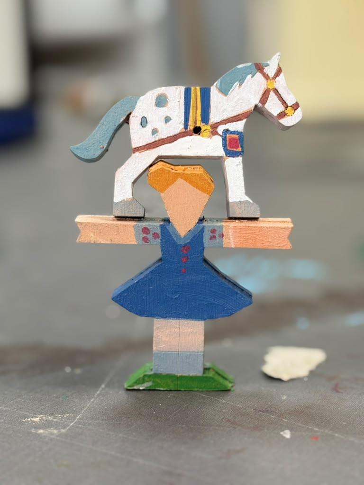
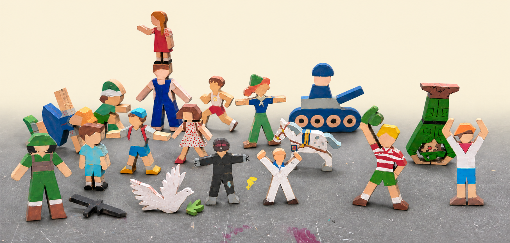
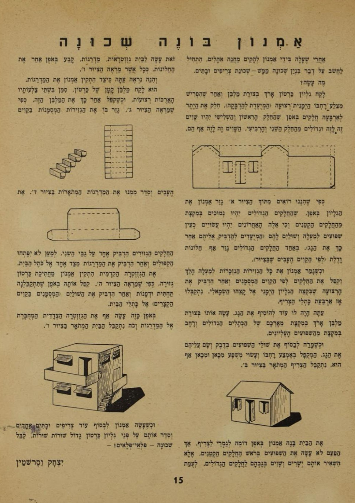
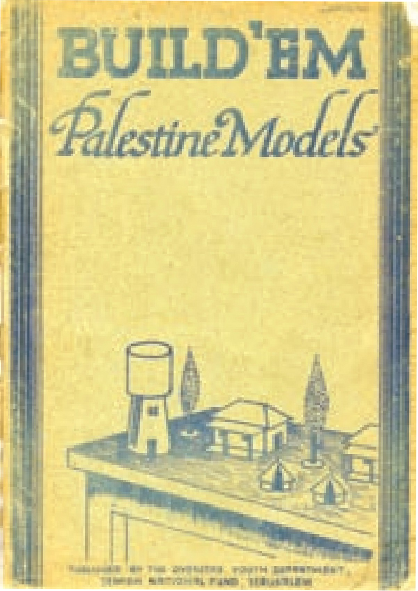
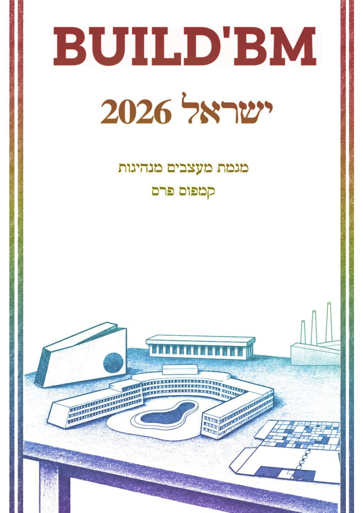

ארץ ישראל שלי
עיצוב ומנהיגות, כיתה י״א
צוות: הלה ברודי וענבל הלצר
שאלה פורייה: מה האחריות שלי?
משך הפרויקט: מחצית א׳
תחומי דעת - חינוך: חוק חינוך ממלכתי, ממלכתיות, אקטיביזם, רב־תרבותיות וחברה אזרחית
תחומי דעת - עיצוב ומחקר תרבות: הקשר בין עיצוב לדפוסים תרבותיים, חברתיים וכלכליים | עיצוב משחקים
מיומנויות והרגלים: מיומנויות חקר ועיבוד מידע | חשיבה ביקורתית | קריאה והבעה חזותית | התנסות בטכניקות וגיבוש שפה אישית | הפשטה | מודעות ואחריות לפעולה | נקיטת עמדה | עבודה תהליכית, טיוטות ורמת גימור
תוצר ביניים: שחזור משחק לוח ישראלי, מתוך קריאה של חקר תרבות
תוצר: משחק תיקון עכשווי
רציונל הפרויקט
דרך התמקדות במדיום של משחקי לוח ישראליים, התלמידים יעברו מהלך שנע בין מחקר תרבותי־היסטורי, קריאה חזותית וביקורתית של המציאות, חשיבה על התפקיד של החברה האזרחית במדינה ובמיוחד של נוער.
מתוך הצורך בשפה משותפת, העבודות ייבנו סביב ״תימות תיקון״ שייגזרו מחוק חינוך חובה (למשל בין אדם לחברו, ידיעת הארץ, אהבת הדעת וכו׳).
התוצרים הסופיים (משחקי תיקון עכשוויים) יידרשו לנבוע מתוך מחקר תרבותי־היסטורי, פרשנות אישית לתימה כיום, עבודה תהליכית ורמת גימור (יישום כלים בעבודה בעיצוב).

01 - הישראלי היפה
בעקבות מחקר תרבות קצר, שיצא מתוך גלויות שנה טובה וכרזות לילדים ולנוער מימי ראשית המדינה, התלמידים הגדירו דמות ישראלית אליה ילדים שאפו (או חונכו לשאוף אליה). את התובנות הפכו לדמות משחק אמיתית, מעץ — באיור דיגיטלי וצביעה ידנית.

02 - מבנים כייצוג של תרבות וחברה
עיצוב חוברת מבנים להרכבה, המציגה את המגוון של ישראל העכשווית, כתגובה למשחקי נייר להרכבה היסטוריים:



03 - מחקר: משחקי לוח ישראליים כביטוי לערכים המשותפים בחברה בראשית המדינה
המחקר המרכזי של הפרויקט התמקד במשחקי לוח שנוצרו בישראל עד שנות ה־60, ובאמצעותם ניסינו לבסס הבנה של התרבות הישראלית. המחקר משלב ניתוח של ייצוגים חזותיים שונים מראשית המדינה: משחקי לוח, כרזות מארכיון שנקר ופרסומים בעיתונות. ייצוגים אלה נבחנים בהקשר של אירועים היסטוריים רלוונטיים שהתרחשו בשנים שבהן יצאו המשחקים לאור. מתוך כך, התלמידים מנסים לנסח תובנות על התרבות הישראלית בשנים הנדונות ועל הערכים החינוכיים שביקשו להנחיל לילדים ולנוער.
04 - תוצר: משחק תיקון — עיצוב תגובה עכשווית
כאן יתווסף טקסט על תוצר הפרויקט.